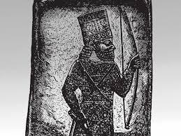

THE ABZU
Introduction
Literary
In parts of South Africa and Zimbabwe, stories are told about "ancient people" or "children of the earth" who knew the locations of gold deposits and concealed them. These tales are typically part of local folklore that explains mineral-rich areas. They are said to have inhabited the land before modern humans, and were short in stature or "spirit-like," living under mountains or in caves. They knew the secrets of the earth and its minerals, especially gold and copper, and therefore it is believed that they "hid" rich mines or guarded them with magical means. In some stories, they are said to have been able to disappear into rocks or move underground, as if they were from the "underworld." In areas such as Great Zimbabwe, Barberton, and Mapungubwe, there are very old mining sites dating back to before European settlement, which has fueled the belief that there was an ancient gold-producing civilization that predated the Zulu and Shona. Some elders recount that these sites were "guarded" by the spirits of these ancient people, and that anyone who tries to extract gold from them without their permission will suffer misfortune or illness. There is a popular saying among some Shona tribes that goes, "The gold is not ours; it is the blood of the people who lived before us." Some modern researchers (especially in schools of "deep anthropology") have linked these stories to collective memories of the ancient Bushmen (San people) who lived before the Bantu expansion southward.
Long before the rise of Egyptian civilization, this vanished civilization worshipped the sun, carved the first statue of the Sphinx and the falcon god Horus, and built an ancient calendar aligned with the constellation Orion (Adam's Calendar). They were also fascinated by gold. Their tools and enigmatic artifacts suggest they possessed advanced knowledge of the laws of nature and used sound and frequency as a tool, which is why we call this region the "First Silicon Valley." Archaeological discoveries link these ruins to ancient civilizations such as the Egyptians, Phoenicians, Dravidians, Maya, Romans, Greeks, and the Sumerian Anunnaki gods.
In his books "Slave Species of God" and "Temples of the African Gods," Michael Tellinger states that Abzu were massive mining centers and that their remains still exist in South Africa (the ancient stone circles which he calls r Adam's Calendar).
When Cyril Hromnik wrote his masterpiece, Indo-Africa, in 1981, he made many enemies with his outlandish suggestions that much of South Africa’s cur- rent culture was influenced by Indians, specifically the Dravidian ethnic group from southern India. His impeccable research in this area leaves little doubt that there was a large presence of Dravidian gold miners and merchants over an extended period as far back as 2,000 years ago and possibly even earlier. They left behind an unmistakable range of influence, which is evident in many aspects of South African culture and indigenous languages. Many of the stone ruins I have explored can be linked directly to the Dravidian culture, on which Hromnik has written many papers.
Until the 16th century the gold producing region of Mpumalanga was known as “Komatiland.” Early Portuguese sources describe it as Terra dos Macomates, the land of the Komati people. Komati, was the professional name of a Dravidian merchant caste of South India. This name is still attached to the Komati River, Komatipoort, etc. During centuries of gold exploration they mixed with the indigenous Kung (Bushmen) creating the Quena (Otentottu), and with the Black people from the NW creating the aBantu people, and together they gave rise to the MaKomati. The pre- European form of the name was MaKomatidesa, Land of the MaKomati.
Regardless of the evidence suggesting that the earliest humans lived in this part of the world and developed the first art, the first society, the first mining, and the first cities on Earth—some scholars genuinely believe that South Africa was a barren land without history until the arrival of settlers from the north—both Black and White. We must remind ourselves of the first principle of archaeology: civilizations are built one on top of the other. Even in modern cities like London and Rome, archaeologists uncover older layers deep beneath the surface, revealing a hidden past. For now, we can only imagine the secrets of the lost civilizations scattered throughout South Africa beneath layers of sand. But what caused these ancient cities to be covered by such vast amounts of soil? There is one possible explanation—a global catastrophe—the Great Flood.
Some people associate Adam's Calendar and the Mpumalanga hills with sites for magical rituals or communication with the "underworld" (Abzu).
Enqi was assigned to Earth and he agreed to the assignment. He was chosen for this job because he was a brilliant scientist and engineer. Enqi built himself a beautiful kingdom in the sea called the Abzu. 7% The structures of the Abzu were built of silver and lapis lazuli, part high on a mountain, and part submerged under water. When Enqi wasn't working in the Abzu, he build dams and re-routed waters. Enqi loved water, and frequently paddled around the marshes all by himself, studying fish, insects, and the grasses along the river banks.
Sumarian
One story tells of a conflict between Zeus and his brother Hades for control of the Earth. This story is similar to that of the Sumerian gods, the brothers Enlil and Enki. Enlil seized control of the upper world, while Enki, the winged serpent, took control of the underworld. This was the land below the equator, from where the gold came. It was not hell, as it is often misinterpreted. The Sumerians called this place Abzu. Enki (who was titled "Lord of the Abzu") managed the gold mining operations there for the benefit of the Anunnaki in Sumerian civilization.
In the original Sumerian texts, "Abzu" was not "hell" but a deep body of water or land located below the equator. It is said to be the source of water, life, and precious minerals – especially gold.
Sumerian tablets tell us that the inhabitants of the ancient Abzu region were extracting all kinds of metals thousands of years ago, long before traditional archaeological studies suggest. Many unusual stone tools exist that were either carved with metal tools or shaped using other forms of advanced technology, such as sound and resonance, in the manner described by Kelly in 1888. Archaeological assessments indicate that these stone tools may be up to 50,000 years old, or even much older. This presents a significant challenge to our current understanding of history, as it is generally believed that humans did not possess any metal tools 50,000 years ago.
Credo describes how all the Sumerian gods had spouses or wives whose names often resembled those of the male gods. Enlil’s spouse was Ninlil; Enki’s wife was Ninki; and the wife of the supreme Sumerian god Anu was A’ntu. So now we come to realize that not only do the ancient symbols originate in southern Africa, but the first link to the ancient gods—who came to rule over the whole of the Near East many thousands of years later—comes from the Sumerian goddess A’ntu. Herein lies the link between all the ancient civiliza- tions, starting with the FIRST people in southern Africa who worshipped a Sumerian goddess called A’ntu. It is astonishing to discover that ancient Zulu culture and religion, including those of all other Bantu tribes, is directly linked to the Sumerians. Credo concludes that Abantu is derived from the Sumerian goddess A’ntu, and Aba’ntu, and simply means “the children/people of A’ntu.” A’ntu, the Sumerian goddess who loved the ABZU—where the gold came from.
Abzu was given a religious fertilising quality in Sumerian mythology. Lakes, springs, rivers, wells, and other sources of fresh water were thought to draw their water from the abzu—the primeval sea below the void space of the underworld (Kur) and the earth (Ma) above. Enki (E.A) was believed to have lived in the abzu since before human beings were created, along with his wife Damgalnuna, his mother Nammu, his advisor Isimud and a variety of subservient creatures, such as the gatekeeper Lahmu, also lived in the abzu.
In Eridu, Enki's temple was known as E2-abzu (house of the cosmic waters) and was located at the edge of a swamp, an abzu.Washing pools were developed for religious washing that drew from the local abzu. Later Babylonian and Assyrian temple courtyards also maintained these pools, they called apsû

Abzu (apsû) was later depicted as a deity only known from the Babylonian creation epic, the Enûma Elish, taken from the library of Assurbanipal c. 630 BCE (but which is about 500 years older). In this story, he was a primal being made of fresh water and the lover to Tiamat, a primeval deity of salt water.
Research
There is indeed an archaeological heritage in South Africa — such as ancient mining sites, prehistoric habitation sites, and a number of relocated/existing stone circles — but the interpretation of these structures varies among experts.
The Zulu and Bantu people have been worshipping A'ntu for thousands of years, and these beliefs correspond to the names of Sumerian deities."